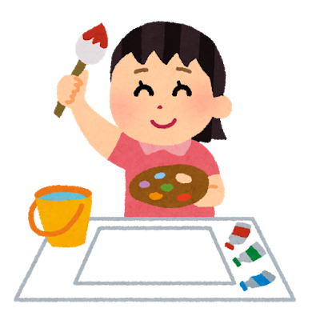

３ステップで、
あなたの最高未来を引き出します！

思い描く
見える化

＼３ステップであなたの人生をパッと明るく／
どうせ私なんて・・・と後ろ向きだった人生が
楽しくオモロくなった私が伝えたい、
を募集します！
この講座は、自分の人生に希望を持てず、理想の自分がずっと見つからず、ネガティブな想像ばかりして生きてきた私が、
他の誰でもない、「私の人生」を生きられるようになった経験をもとに、 自分らしく、心地よく、他の誰にも真似できない自分だけの人生を生きるために必要なことをお伝えする講座です。
講座でお伝えすることを実践していただくことで、自分のなりたい姿、あるべき姿が見えるようになり、毎日が見違えるように輝き出すこと間違いなしです。
（私が今までの経験を通して「価値がある、変化を感じられる」と思ったことしかお伝えしません！）
※この講座は自分と向き合うワークが多いため、向き合いたくない自分とも直面してしまう場合があります。それでも自分を変えたい！自分らしく生きたい！という方に参加していただきたいと思っています。
☑︎理想の自分は案外簡単に手に入ることがわかる
☑︎夢があることの素晴らしさに気づける
☑︎自分が本当は叶えたいとずっと思っていたことに挑戦したくなる
☑︎自分にはまだまだたくさんの可能性が眠っていたことに気付ける
☑︎夢が叶うまでのステップが見えてくる
☑︎朝起きた時から、その日1日がエネルギッシュに過ごせる
☑︎どうせ私なんて……」から、「どうせ私だから大丈夫」と自信が持てるようになる
☑︎行動すること、チャレンジすることのハードルが下がって、変わることが楽しくなる
☑︎他人の声がどうでも良くなって、いつの間にか自己肯定感が高くなってる
☑︎いつまでも、若々しくいられる（夢や目標のある人の目や肌はイキイキしてます）
これは数年前まで、私がよく思っていたこと。
ちょっと前までは私も、ネガティブなことばっかり考えて、「どうせ私なんて・・・」が口ぐせの闇女でした。
で、その結果何が起こったかというと・・・
・自分の可能性を信じられなくなる
・毎日にハリがなくなる
・自分じゃない何かに答えを求めようとする（過食嘔吐も悪化）
・他人の人生に依存するようになる（異性関係は荒れましたww）
・ひとり時間を持て余す
・失敗するのが怖くなって、行動することのハードルがめちゃくちゃ高くなる
など、自分の人生を放棄するように・・・。
このままじゃダメだと分かっているのに、やる気もモチベも、ワクワクも湧いてこない・・・。
ただただ時間だけが過ぎていく・・・。
焦る気持ちからどんどんネガティブになってしまう・・・。
それは、
「想像力の無駄遣い」をやめたから！
想像力の無駄遣いとは、
夢を見たり、理想を思い描くことなど、自分の人生にプラスになることに想像力を使うのではなく、
ほとんど起こることのない不安や心配ごとに想像力を使ってしまうこと。
この無駄使いをどんどん減らしたことで、それまで
何でもネガティブに解釈してしまう・・・
物事のいい側面を見ようとしない・・・
自分は不幸で運がないとと思い込んでしまう・・・
やる前から、自分でチャンスを潰してしまう・・・
と憂鬱に生きてきた私でも
不思議と自分の人生に可能性を感じられるようになり、
「あ、今自分の人生を生きてる〜！」
と思えるようになってきました！！
特に女性はもともと想像力や妄想力が豊かなので、
想像力を味方につけると、まじで強いです（笑）
想像して（思って）、創造する（作る）力は、
人間のみ与えられた素晴らしい才能
そんな素晴らしい力を、
味方につけない手はありません！！
なので今回の講座では、
超絶ネガティブ人間でも自分の未来にワクワクできた、
想像力を味方につけて面白い人生を作る３ステップを
お伝えしたいと思います！！！

3つのステップのうち、一番大事なのがこのステップです！！！
理想の自分になるためには、まず理想の自分を思い描かなければいけません。
しかし、多くの人は、どうしても自分の可能性を過小評価しがちです。
それでは、自分の可能性を最大限発揮することができません。
そうならないようにここでは、無意識のうちに自分にかけてしまって制限を取り除き、自由な発想で想像力を働かせ、自分の未来を思い描くワークに取り組みます。
また、内観の方法や土台となるマインド、答えが見つかる問いかけ法などについてもシェアします。

「こうなりたい！」と思ってゴールを決めても、数日経ったらいつの間にか忘れてしまっている、なんてことはありませんか？
そうならないように、なりたい未来を想像できたら、その未来を「見える化」しましょう！
これを行うことで、いつでもどこでも自分の未来を繋がることができるようになります。
そうすることでやるべきことや、目標を達成するまでの道筋などが見えてきます。
見える化をしっかり行うことで、毎日のモチベを高く維持できるようになり、日々が楽しく充実するようになりますよ。
ちょっとめんどくさい作業もありますが（笑）、コツを押さえれば簡単なので安心してください！

なりたい自分を思い描き、それが見える化できたら、次はいよいよその未来を大切に大切に育てていく過程に突入です！！
なりたい自分を育てる作業を行うことで、自分には手の届かないと思っていた未来がどんどん近くにやってきます。
それに伴って、自己肯定感が高くなり、他者評価ではなく自己評価で自分の価値を決められるようになります。
また、「変わること」の恐れがなくなり、行動すること、チャレンジすることが楽しくなってきます！
そして気づけば・・・
自分だけの最高未来が手に入っている！！！という仕組みなのです。
※両日ともZOOMにて行います
アプリをダウンロードしていただくとスムーズです。
※当日参加が難しい場合には資料と録画した動画をお送りします。
・制限のはずし方
・内観の極め方
・あいまいをスッキリに変える問いかけ法
・想像力を最大活用するには？
・理想世界はこうやって見つける
・自由な発想を取り戻せ！
・自分の強みってなに？
・どうすればハッピー人間になれる？
・可能性だらけの未来に気付けるワーク
・ほしいものが必ず手に入る脳の使い方
・ラクしたい自分に負けそうな時は？
・偶然やシンクロニシティの話
・TO DO LIST活用法
・1日が充実する朝の始め方
・目標は３つに分けて考える！！
・行動するのが楽しくなる、とっておきのマインドセット
※銀行振り込みをお願いしております。
手数料はご自身での負担をご了承ください。
最初はコンサルを特典につける気はなかったのですが、あった方がより「理想の自分」を描きやすいと思って急遽追加！！（笑）
今回の講座は、自分との対話方法を学んで想像力を解放し、たくさん自分に語りかけ、自分で答えを見つけ出すことを目的としいるのですが、
どうしても自分ひとりでは答えが出せないこともあります。
そういった時にコンサルやLINEをぜひ活用してください！
コンサル込みでこの金額は・・・多分安いと思う（笑）
来年の今頃、
「もう年末なの？私なんにも変われてない・・・」
と自分にがっかりするのか、
「今年は自分のやりたいことや目標が見つかって、
充実した楽しい一年だった！来年はもっとオモロくなりそう」
とワクワクたっぷりに年末を迎えるのか、
それはきっとあなた次第。
でも、1つ言えることは、
・自分の人生にワクワクできたり
・やりたいこと、やってみたいことが溢れてきたり
・他人の声よりも、自分の声を優先できるようになったり
・自分の「好き 得意」に気づけるようになったり
・ひとり時間が充実したり
・朝起きたときから、「今日はこんな1日にしよう！」って胸が踊ったりする人生は、
めちゃくちゃ楽しいってことです。
だから、今の自分の人生を考えたときに、
もっとこうしたい！
本当はこんなことがしたい！
もっと自分の強みを生かしたい！
自分の人生は自分で作っていきたい！
自分ともっと仲良くなりたい！
自分にもっと期待したい！
自分の可能性を信じたい！
と思う気持ちがあるのなら、
この講座で自分とたくさん向き合って、
自分の中に眠ってしまった
「あなたが本来生きるべき世界」
を見つけてください。
きっと、
「あ、これこれ。本当に私がほしいのはコレだわ」
と思えるものが見つかるはずです。
そんなあなたと、アツい夢を語り合える日を楽しみにしています。